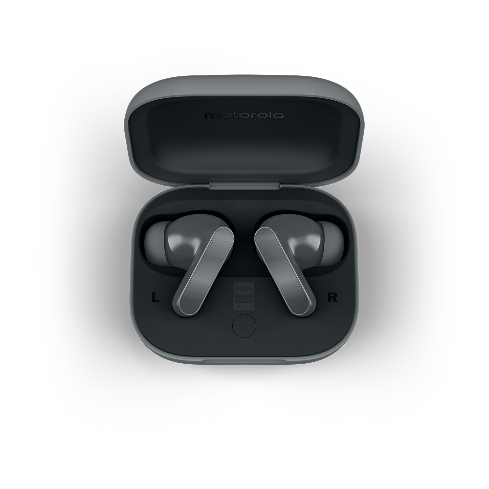

Official project builds
Choose the build
made for your system.
Moto Buds Desktop Utility is free and open source. There are no accounts, subscriptions, or bundled extras.

Downloads
Select a platform
Windows
For Windows 10 and Windows 11
Setup installer
Installs the utility, adds Start Menu access, and keeps everything in the expected place.
Download installer ↓ No installationPortable executable
Run it directly from any folder or removable drive without changing your system.
Download portable ↓Windows note: All core controls are supported. LDAC switching is unavailable because it relies on the Linux PipeWire audio stack.
Linux
Native packages for modern distributions
Debian package
Best for Ubuntu, Linux Mint, Pop!_OS, Debian, and distributions using DEB packages.
Download .deb ↓ Most distributionsAppImage
A portable build for Fedora, Arch, openSUSE, and most other modern distributions.
Download AppImage ↓Linux requirements: Python 3 and BlueZ. The Debian package declares these dependencies automatically.
Before you open the app
Connect the earbuds first.
Pair in system settings
Use the regular Bluetooth panel in Windows or Linux to pair and connect your Moto Buds.
Launch the utility
Once the operating system shows the earbuds as connected, open the utility and press Connect.